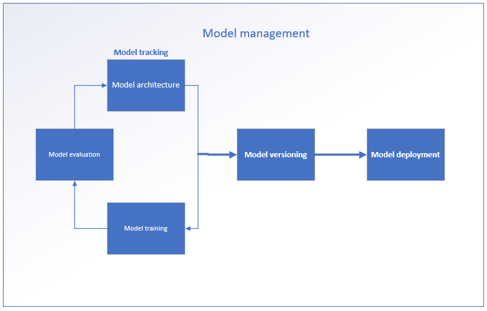

Model management
Model management is one of the most important process in machine learning operations which involve the tracking of machine learning models, model registry, model versioning, hardware scaling and model deployment. Managing machine learning model components is very important in the development process as it aid easy collaboration among team, reproducibility, organization, optimization, and versioning of models. Now let’s talk about model tracking. There are numerous modules used for managing of models in ML operations, they include: MLflow, Neptune, Comet, Weight and biases s couple of others. However, MLflow is very popular because its an open source which is almost free to use when compared to others.
Experiment tracking
Machine learning model tracking involves the logging of all the key parameters, metrics, model, dataset and many more from the model design to model evaluation. Modern tracking makes tracking easier and reliable when compared to the traditional method which is known as folder system. This system is error prone, doesn’t support versioning and model lineage i.e keeping up with model parameters as number of models increases.
Here, I will demonstrate experiment tracking using MLflow open source platform for machine learning development workflow. There are numerous parameters that can be logged using MLflow during experiment tracking, these include; model artifacts, parameters, tag, performance metrics, and time.
Installing MLflow
MLflow can simply be install using python pip package:
pip install mlflow
After installation in the development environment one can start creating runs. With runs one have the ability to log whatever parameters that are needed to be logged. To do this one can easily follow these easy steps:
Logging with MLflow
with mlflow.start_run():
mlflow.set_tag(“role”, “name of developer”) # This is use to collect the details of the developer i.e the developer role, name and so on. This help during model development among team of data scientists or ml engineers for model documentation.
Mlflow.log_param(“learning_rate”, learning_rate) # This demonstrate how to log parameters like learning rate, loss function, epoch etc.
Mlflow.log_metric(“acc_loss”, acc_loss)# This demonstrate how to log the losses encountered during model training and model validation, one can also log accuracy, precision, recall and F1 score using this function of the mlflow library.
Mlflow.log_input(val_data, context= “validation”) # This is a sample of how to log a validation dataset using mlflow.
However, all this logging can be done automatically using an MLflow Application Programming Interface (API).
Mlflow.autolog()# With autolog one can simply log all the necessary information during the training, validation and prediction of the model.
MLflow configuration
There are three (3) different configurations possible for machine learning development workflow these are; workflow without tracking, remote and local configuration. For the no tracking this can be possible during competition or practicing where one is more concern about the model performance evaluation and not for deployment for business enhancement. The remote configuration involves logging all these variables into the MLflow tracking User Interface (UI), however, this support model versioning and deployment. For the local configuration, this involves the logging of the parameters and artifacts on the local system.
Configuration of MLflow using either local or remote depend on the developer and this is done by using mlflow API known as sett tracking URI.
mlflow.set_tracking_uri(“”)
By default when a URI is not set mlflow assume you want to log your parameters and artifacts locally on your system
mlflow.set_tracking_uri(“localhost:5000”)
However to use a URI as seen above one need to lunch mlflow server locally using:
Mlflow server --bckend-store-uri sqlite:///backend.db
With this one can be able to log all the model parameter and artifacts using mlflow backend server.